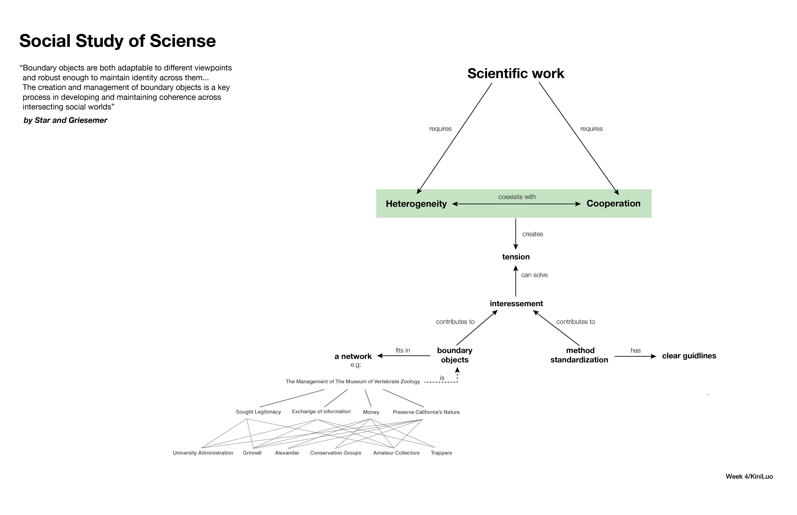

Concept Maps for Design Thinking
04.2016 / boston
“a typeface is a representation of a representation of a representation of a representtaion” __Cult-ure
as argued by Hugh Dubberly, who instructed the Design Critical Thinking course in the spring of 2016, design is not merely aesthetical, but also technological and political. The meaning we constructed and exchange are not self-evident but relies on our mental models of the physical/substantial/material world. Thus, the study of design is essentially a study of sign and representation.
This collection of concept maps is a my version of abstraction for several readings that foster design critical thinking.
The Theory of Sign / Charles Peirce
Course in General Linguistic / Ferdubabd De Saussaure
The Mathmatic Theory for Communication / Claude E Shannon
The Theory of Affordance / Gibson
Social Study of Sciense / Star and Griesemer 
Conceptual Model and It's Structure / Johnson and Henderson
Models for the Synthesis of Form / Christopher Alexander
Bridge Model and SECI Model / Evenson, Dubberly, and Robinson
The Sciences of Artificial
Different Models of Design Process